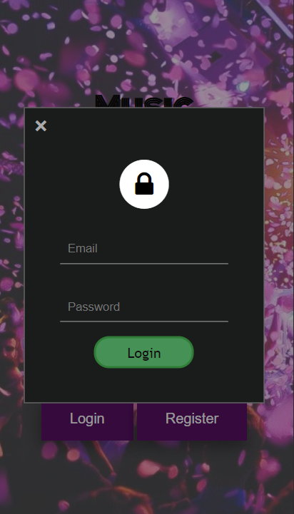
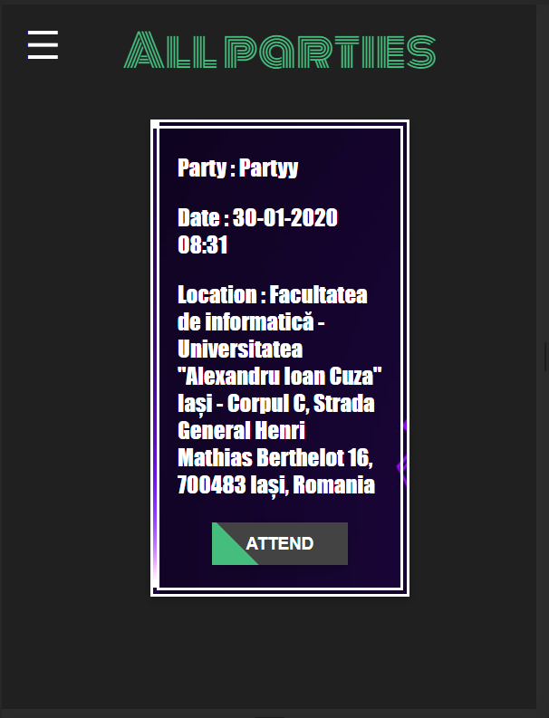
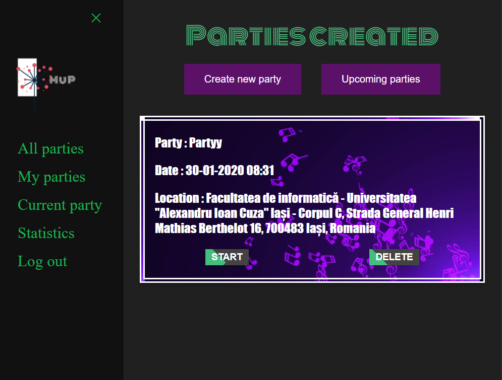
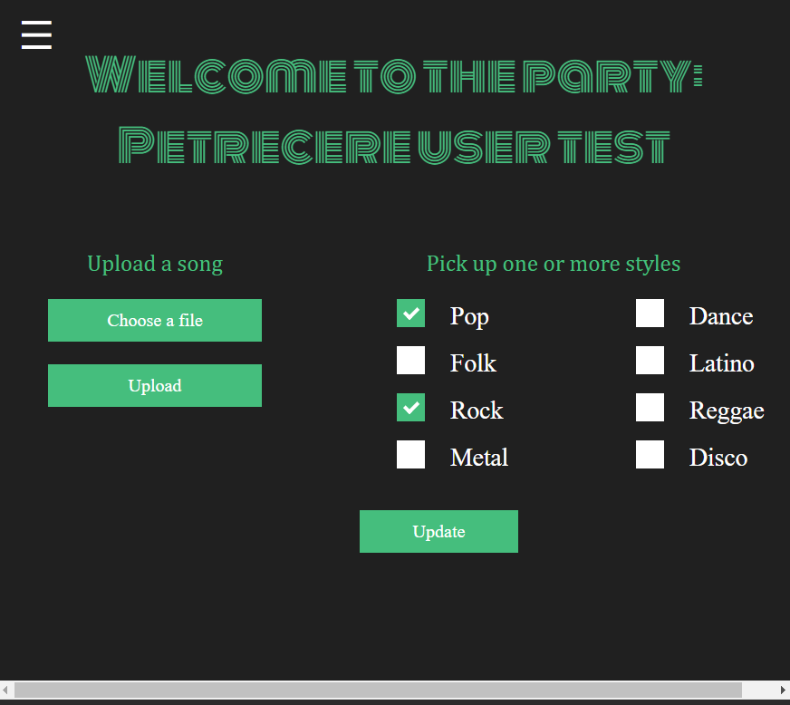

MUP se considera a fi un instrument "inteligent" care va automatiza alegerea muzicii difuzate la o petrecere.
Fiecare persoana care va merge la o petrecere aleasa de el va putea adauga melodii in playlistul petrecerii ori va putea alege unul sau mai multe genuri muzicale preferate.
2. Inregistrare/Autentificare
Primul contact cu aplicatia se realizeaza cu ajutorul sistemului de inregistrare si autentificare. Inregistrarea consta in completarea unor date personale si alegerea unei parole.
Accesul in aplicatie se face pe baza email-ului si a parolei alese la inregistrare. In urma autentificarii.

3. Petreceri
Imediat dupa logare, utilizatorul va fi redirectionat pe pagina principala unde va avea acces la un meniu, una dintre optiunile sale fiind "Petreceri". In aceasta pagina vor fi listate toate petrecerile disponibile in viitor, in apropierea utilizatorului.
Acesta va putea da join la una sau mai multe petreceri care nu au loc simultan sau va avea posibilitatea sa organizeze propria petrecere. Odata creata petrecerea, ea va fi disponibila in sectiunea de "Petrecerile Mele".


4. Petrecere curenta
O alta optiune a meniului este cea de "Current party". Fiecarui utilizator ii vor aparea petrecerile la care a dat join sau cele pe care le organizeaza.
Atunci cand se acceseaza o petrecere la care va participa, functionalitatile disponibile sunt incarcarea unei melodii in format MP3/FLAC si alegerea genurilor muzicale dintr-o lista de genuri,
cu restrictia ca aceste functionalitati vor fi disponibile doar cu cateva minute inainte de inceperea petrecerii daca utilizatorul se afla la o anumita distanta de locatia acesteia. O alta functionalitate este cea de a sterge joinul la petrecerea respectiva.
Daca petrecerea selectata este una pe care userul o organizeaza, functionalitatea este pornirea acesteia si 0 stergerea acesteia.

5. Statistici
In meniu se regaseste optiunea de verificare a statisticilor disponibile pentru fiecare petrecere terminata la care utilizatorul a participat.
Prin intermediul acestor statistici, utilizatorului ii vor fi sugerati alti utilizatori cu care imparte aceleasi gusturi muzicale.
5.1 Individuale
Aceasta functionalitate consta in afisarea unor detalii Individuale precum timpul petrecut dansand, melodia favorita/detestata, genul de muzica favorit/detestat.